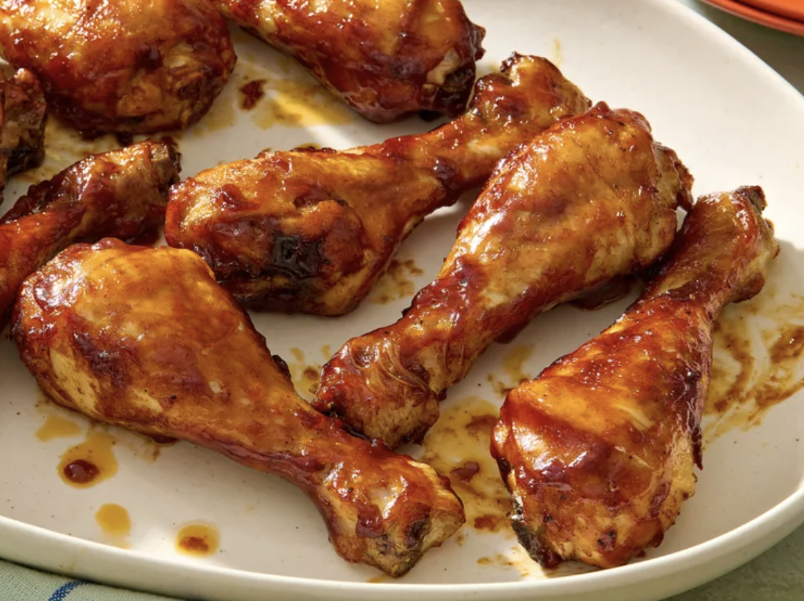

Baked BQQ Chicken Drumsticks

Description
These oven-baked barbeque chicken drumsticks are easy to prep and cook in just 40 minutes. They taste sweet, tangy, and juicy. I used Baby Ray's barbeque sauce for ease and convenience but feel free to use homemade barbeque sauce.
Why You’ll Love This Recipe
- Basic spices and pantry staples make an easy, flavorful marinade.
- Home cooks appreciate the flexibility to swap oils and sauces without sacrificing the results.
- Allrecipes member France Cevallos says, "The seasonings and cook time are spot on."
Ingredients & Quantity
- 1 ½ pounds chicken drumsticks
- ¼ cup extra-virgin olive oil
- 1 teaspoon salt
- ½ teaspoon freshly ground black pepper
- ½ teaspoon paprika
- ¼ teaspoon garlic powder
- ¼ teaspoon onion powder
- ¼ teaspoon cayenne pepper
- 1 ½ cups barbeque sauce (such as Sweet Baby Ray's), or more to taste
Directions
- Preheat the oven to 400 degrees F (200 degrees C). Line a baking sheet with foil.
- Mix olive oil, salt, pepper, paprika, garlic powder, onion powder and cayenne together in a large bowl. Add drumsticks and toss to coat. Spread out on the prepared baking sheet.
- Bake in the preheated oven for 20 minutes. Remove from oven and brush with barbeque sauce; bake for 7 to 8 minutes. Flip drumsticks, brush again with barbeque sauce, and bake an additional 7 to 8 minutes.
- Set an oven rack about 6 inches from the heat source and turn on the oven's broiler.
- Brush drumsticks with more barbeque sauce and broil for 3 to 4 minutes. Flip drumsticks, brush with barbeque sauce, and broil until chicken is no longer pink at the bone and the juices run clear, 3 to 4 more minutes. An instant-read thermometer inserted near the bone should read 165 degrees F (74 degrees C).
Accueil